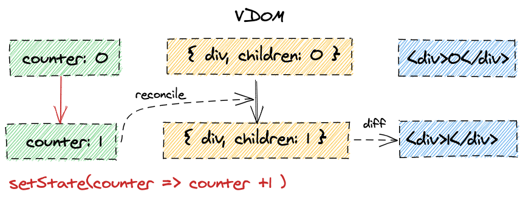
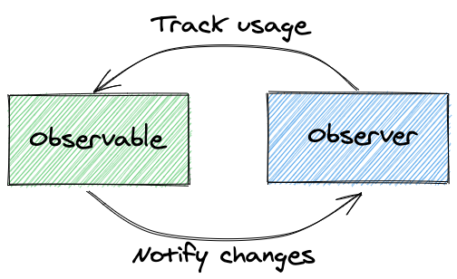
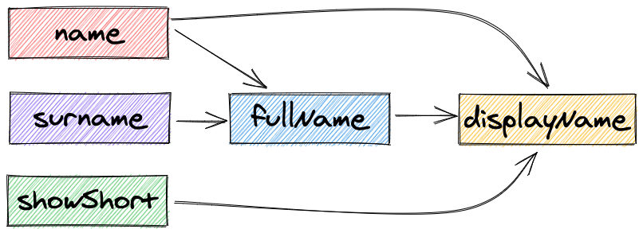

$-style

- обнови состояние
- синхронизируй весь UI
Задачки лежат в папке tasks, запуск сервера:
$ cd tasks
$ npm i
$ npm start
По умолчанию, сервер запустится по адресу http://localhost:8080
Изменения подхватываются автоматически, перезапускать ничего не нужно
Хотим синхронизовано изменять состояние и UI



Хотим декларативный механизм, который сам будет знать что нужно обновлять

Смотрим на задачку 0.intro

MobX — это формулы в Google Sheets
class X {
constructor() {
makeObservable(this, {
// аннотации (observable, action, computed)
});
// или с дефолтными настройками:
makeAutoObservable(this);
}
}
Для Array, Map, и Set есть observable варианты
action и action.bound для аннотаций,runInAction(() => {/*…*/}) для атомарности ручных измененийПо умолчанию, MobX будет ругаться на изменения вне action-ов
computed как аннотация для геттеров илиconst x = computed(() => /*…*/) для создания обертокconst disposer = autorun(() => {
/*…*/
});
Чтобы не получилась утечка по памяти, нужно звать disposer, когда реакция больше не нужна

Есть несколько вариантов:
.then() должен быть action-омЕсть несколько вариантов:
.then() должен быть action-омawait нужен отдельный actionЕсть несколько вариантов:
.then() должен быть action-омawait нужен отдельный actionЕсть несколько вариантов:
.then() должен быть action-омawait нужен отдельный actionaction и runInActionМожно использовать flow вместо async/await:
async function load(store) {
store.loading = true;
try {
const result = await fetch("…");
runInAction(() => {
store.value = result;
});
} catch (e) {
runInAction(() => {
store.error = e;
});
} finally {
runInAction(() => {
store.loading = false;
});
}
}
// добавили flow()
const load = flow(
// function* вместо async
function* (store) {
store.loading = true;
try {
// yield вместо await
const result = yield fetch("…");
store.value = result;
} catch (e) {
store.error = e;
} finally {
store.loading = false;
}
}
);
Делаем задачку 3.plan-to-watch

import { observer } from "mobx-react-lite";
const MyComponent = observer((props) => /*…*/);
memo()autorun(() => Component())const theThing = makeAutoObservable({
/*…*/
});
const ThingContext = createContext(theThing);
const PropsThingReader = ({ thing }) => <>{thing.view}</>;
const GlobalThingReader = () => <>{theThing.view}</>;
const ContextThingReader = () => <>{useContext(ThingContext).view}</>;
Для UI-состояния (лоадеры, выборы, фокусы и т.д.) хватит React
Профит от MobX будет если:
const Component = () => {
const [state] = useState(() => new MyState());
const [moreState] = useState(() =>
makeAutoObservable({
/*…*/
})
);
const evenMoreState = useLocalObservable(() => {
/*…*/
});
/*…*/
};
observable — оборачивай в observerobservable в компоненты без observer (используй toJS, либо конкретные свойства)observable с props, используй useEffectuseEffect, используй autorun (или reaction)Делаем задачку 4.google-sheets
Избранные главы из документации: